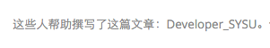
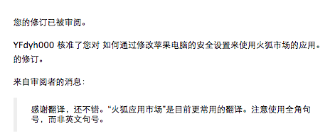

记第一次翻译For开源社区
Sat, Jan 2, 2016 标签： Firefox今晚在用火狐的Firebug，有点问题，去火狐社区找答案，结果去了火狐市场，发现还是英文，还有一个邀请翻译的按钮：
好吧，难得今晚心情不错，就去翻译下吧~~~嘿嘿
先是注册个了火狐社区的账号，申请做志愿者的翻译工作，随后就挑了这篇文章开始翻译啦~
其实在两个小时前是这样的，“这个篇文章尚没有中文翻译版”。
花了半个小时时间，把它从英文版变为了中文版~~~
翻译的好烂~，人家审核的妹子还通过了~~~感觉不错
最后还留了个名

哈哈，收到邮件的时候还是蛮开心的 